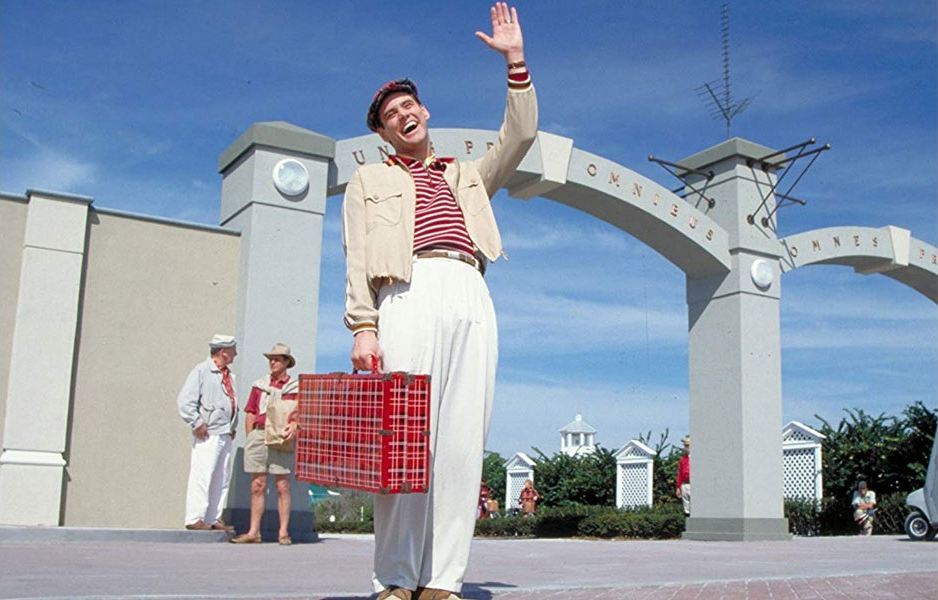
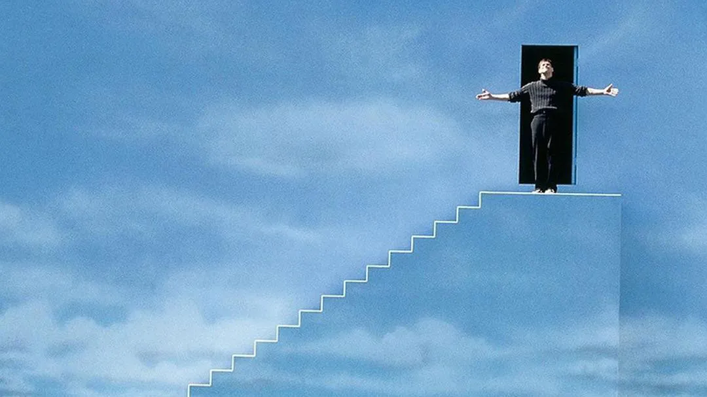

Truman Burbank


매일 아침 이웃에게 "못 볼지도 모르니 미리 말해 두죠. 좋은 오후, 좋은 저녁, 좋은 밤 보내세요!" 라고 인사를 건네는 것이 습관일 정도로 밝고 다정하며 인사성이 밝습니다.
어린 시절엔 탐구심이 강하여 여행가가 꿈이었고 섬에서 벗어나고 싶어하였지만, 제작진은 그가 세트장 밖으로 나가지 못하도록 어릴 때부터 비행기 공포증, 물에 대한 트라우마 등을 심어주어 나가지 못하게 조작된 환경에 갇혀 있습니다.
그럼에도 불구하고, 평범한 삶을 사는 와중에도 마음속으로는 항상 섬을 떠나는 것을 꿈꿨습니다. 캠퍼스 시절 자신의 첫사랑이던 실비아와 이해할 수 없던 이별 당시 그녀의 아버지가 목적지로 이야기한 피지로 떠나는 것이 꿈이었기 때문입니다.
하늘에서 무대 조명이 떨어지는 사건으로 시작해, 돌아가신 줄 알았던 아버지의 재출현 그리고 라디오 주파수 오류 등 트루먼의 삶에 녹아 들어있던 일상적인 조작 속에서 트루먼이 세상의 이상함을 인지하고, 자신의 현실과 주변을 의심하기 시작하게 되는데···
이후 그는 평소와는 다른 행동을 더러 시도해 보며 자신의 삶이 이상하다는 의심이 확고해지고 그동안 꿈꿔온 피지로 떠나길 마음먹는다.
그러나 무슨 행동을 하여도 연기자들이 그의 행동을 막기 시작하자 결국 그는 역으로 연기자들을 속이기 위해 야밤에 잠든 척 위장하고 탈출을 감행한다.
물공포증과 제작진들이 만들어낸 인공 폭풍우에도 불구하고 그는 배를 타고 계속 앞으로 나아가 결국 하늘색과 흰색으로 칠해진 세트장 벽에 부딪히고 만다.
더는 나아갈 수 없다는 사실에 절망하는 한편 다른 쪽 벽면에 무엇인가를 확인한 트루먼은 벽을 더듬어가며 나아가다 계단과 그 위에 있는 비상문을 발견한다.
그리고 계단 위로 올라가 모두가 생방송을 지켜보는 가운데 문을 열고-

"Good morning! In case I don't see ya, good afternoon, good evening, and good night."
못 볼지도 모르니 미리 말해 두죠. 좋은 오후, 좋은 저녁, 좋은 밤 보내세요!